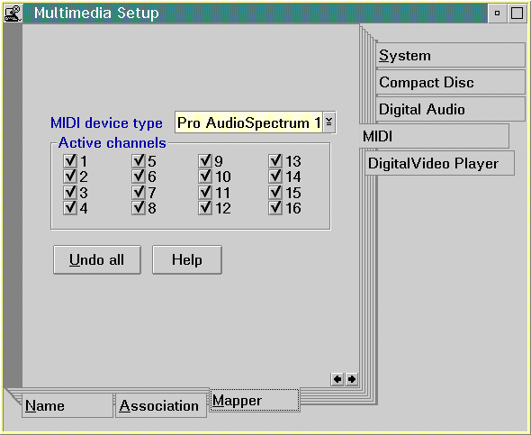

The MIDI mapping function provided with the sequencer device offers a level of device independence to application developers. Because MIDI patch assignments and percussion key assignments of different MIDI manufacturers vary, the MIDI mapper can be enabled to dynamically translate MIDI data in real-time, as a MIDI song is played. An application enables the mapper by setting the port with the MCI_SET command:
set sequencer port mapper
The user can configure the sequencer device by selecting from a list of available device types. The list is provided on the mapper page of the Multimedia Setup application. OS/2 multimedia provides a General MIDI map, as well as a map for each sequencer device supported by OS/2 multimedia. A mapper page (shown below) also allows the user to enable or disable specific channels.

Once the MIDI mapper is enabled, the Sequencer expects the MIDI files it plays to conform to the General MIDI Specification. The MIDI mapper translates the General MIDI format to the appropriate device format as specified in the Mapper page of a MIDI device in Multimedia Setup.